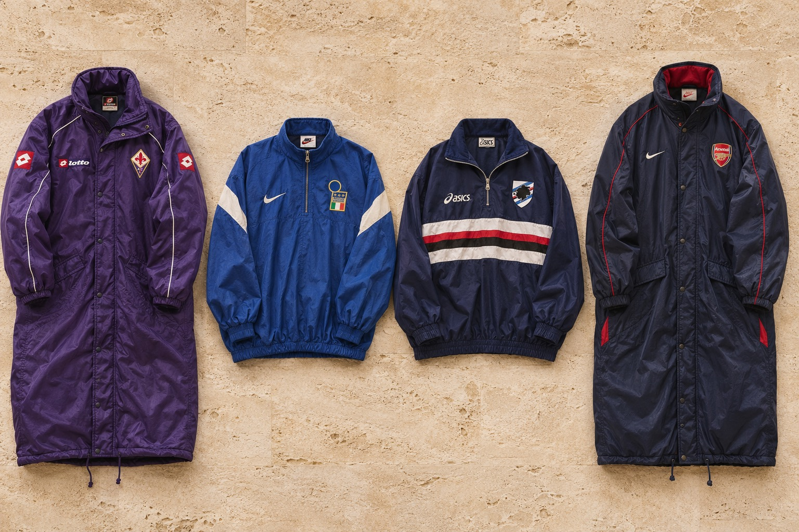

Alex’s portrait · awaiting photography
From the founder
“I grew up in Italy with a Liverpool shirt on my back. Kitaly is where those two worlds meet.”
Alex, founder
Authentic vintage training wear, Italian football and rare player-issue pieces, checked by hand and graded honestly.

Drill tops, tracksuits and bench coats, the overlooked side of iconic eras.
Explore →Italian clubs and the national team, sourced from where it all began.
Explore →Made for the squad, not the shops. Rare, and getting rarer.
Explore →Garment imagery is illustrative. Product details follow the supplied archive.
Alex’s portrait · awaiting photography
“I grew up in Italy with a Liverpool shirt on my back. Kitaly is where those two worlds meet.”
Alex, founder
Tell us what you're after. With our contacts in Italy, we might just find it.